Send Apple Card transactions to Supabase
WalletFeed sends your Apple Card, Apple Cash and Savings transactions from your iPhone to a Postgres database in your Supabase project. You copy the project URL and the publishable key to WalletFeed. Then you paste the SQL from WalletFeed in the Supabase SQL Editor.
Before you start
You must have these items:
- An iPhone with iOS 26 or a newer version. WalletFeed is available only in the US.
- WalletFeed, with access to your Wallet accounts.
- WalletFeed Pro (a subscription with a 1-week free trial, or a one-time Lifetime purchase). You must have WalletFeed Pro to send transactions to Supabase.
- A Supabase account, or an e-mail address for a new account. You can use the Free plan of Supabase.
- A web browser on a computer. In this guide, you use the Supabase SQL Editor on the computer.
Your key stays on your iPhone
- WalletFeed keeps the publishable key in the Keychain on your iPhone. iOS encrypts the Keychain.
- The publishable key does not go to iCloud Keychain or to your other devices.
- WalletFeed has no account and no servers. No person at WalletFeed can see or get the publishable key.
- Your iPhone sends the publishable key only to your Supabase project, in each request to your Supabase project.
- When you delete the destination, WalletFeed deletes the publishable key from your iPhone. You can also delete the key in Supabase.
Step 1: Make a Supabase project
A Supabase project has its own Postgres database. If you have a project for your transactions, go to Step 2.
-
On your computer, open the Supabase sign-up page in a web browser.
-
Type your e-mail address in Email.
-
Type a password in Password.
-
Click Sign up.

-
If Supabase shows an hCaptcha image check, obey the instructions in the check.
-
If Supabase sends you an e-mail, open the hyperlink in the e-mail.
-
If Supabase shows "Sign in to your account", get access to your Supabase account with your e-mail address and your password.
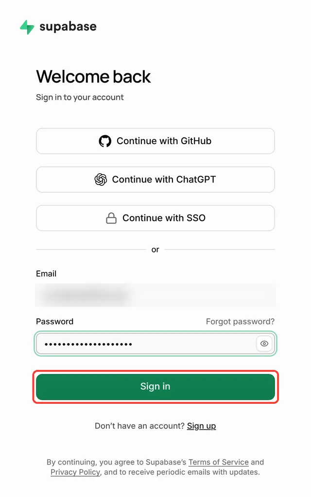
-
On the "Your organizations" page, click New organization.
A new Supabase account has no organization. An organization contains your projects.
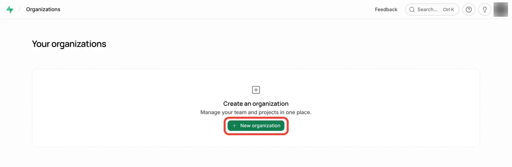
-
In Name, replace the text with a name for the organization, for example
WalletFeed. -
In Type, select a type, for example Personal.
-
In Plan, select a plan, for example Free - $0/month.
-
Click Create organization.
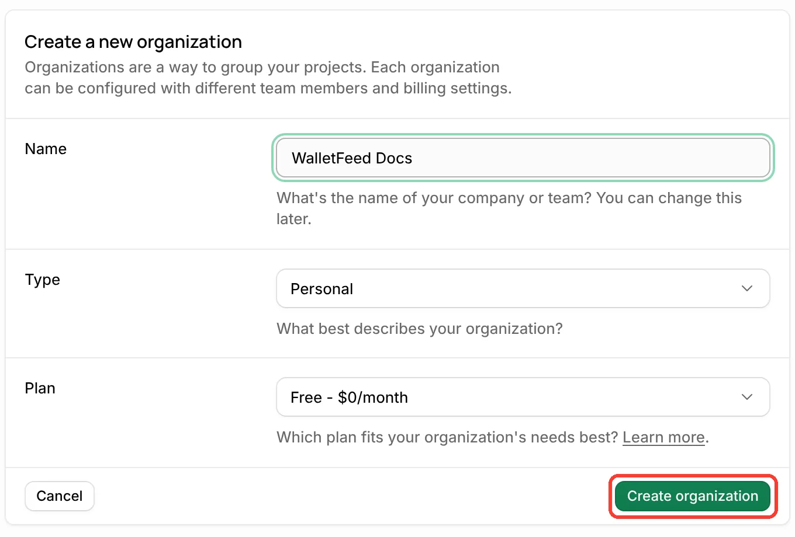
Result: Supabase shows "Create a new project".
-
In Project name, replace the text with a name for the project, for example
WalletFeed. -
Click Generate a password.
Supabase puts a password in Database password. WalletFeed does not use the database password.
-
In Region, select a region, for example West US (Oregon).
-
In Security, make sure that Enable Data API has a checkmark.
WalletFeed sends your transactions to the Data API of the project.
-
Click Create new project.
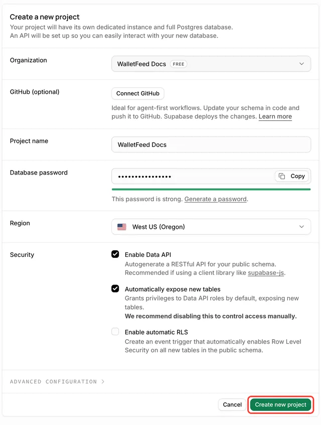
-
Wait until the project page shows Healthy below STATUS.
Step 2: Open the Supabase form in WalletFeed
-
On your iPhone, open WalletFeed.
-
Tap Destinations.
-
Tap + at the top of the screen.

-
In the search field, type
Supabase.
-
Tap Supabase.
-
If WalletFeed shows WalletFeed Pro, get WalletFeed Pro.
Result: After you get WalletFeed Pro, WalletFeed shows the Supabase form.

-
Keep the Supabase form open until you tap Add in Step 5.
You can use a different app while the form is open. Each time that you open the Supabase form, WalletFeed makes new SQL with a new token for the table. If you close the form, do Step 2, Step 3 and Step 4 again.
Step 3: Copy the publishable key and the project URL
Do these steps on your iPhone. To copy the key and the URL on a Mac, refer to Copy the key and the URL on a Mac.
-
In the Supabase form, tap Supabase Dashboard.
Result: Your web browser opens Supabase.
-
If Supabase shows "Sign in to your account", get access to your Supabase account with your e-mail address and your password.
-
If Supabase does not show "Select a project to continue", tap Supabase Dashboard in WalletFeed again.
-
In "Select a project to continue", tap your project.
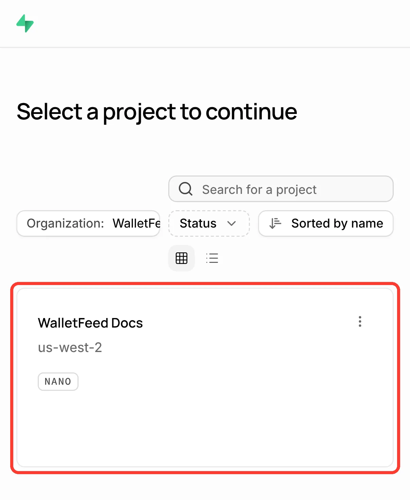
-
In "Connect to your project", tap Server.
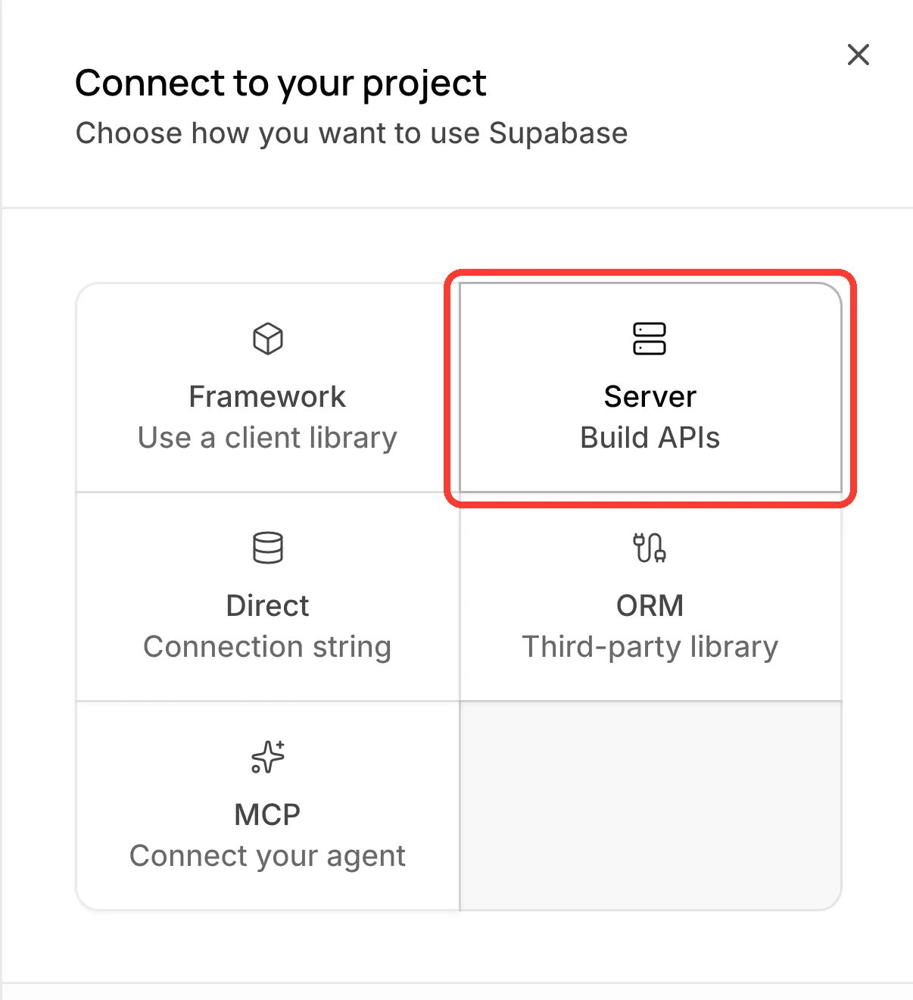
-
Scroll to
.env. -
Tap the copy button in the
SUPABASE_PUBLISHABLE_KEY=row.The publishable key starts with
sb_publishable_. Do not copy theSUPABASE_SECRET_KEY=row. WalletFeed does not accept a secret key.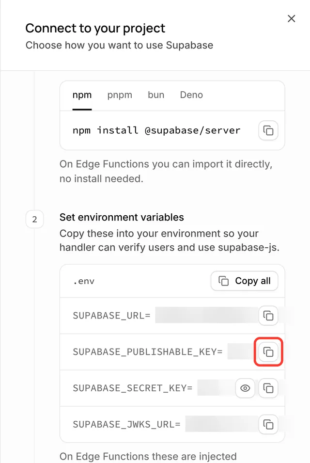
-
Open WalletFeed again.
-
Touch and hold Publishable Key.
-
Tap Paste.
-
Open the Supabase page in your web browser again.
-
Tap the copy button in the
SUPABASE_URL=row. -
Open WalletFeed again.
-
Touch and hold the field that shows
https://abcd.supabase.co. -
Tap Paste.
Copy the key and the URL on a Mac
If your Mac uses the same Apple Account as your iPhone, you can copy on the Mac and paste on the iPhone with Universal Clipboard.
-
On your Mac, open your project in the Supabase dashboard.
-
Click Copy, to the right of the project URL.
-
Click Publishable key.
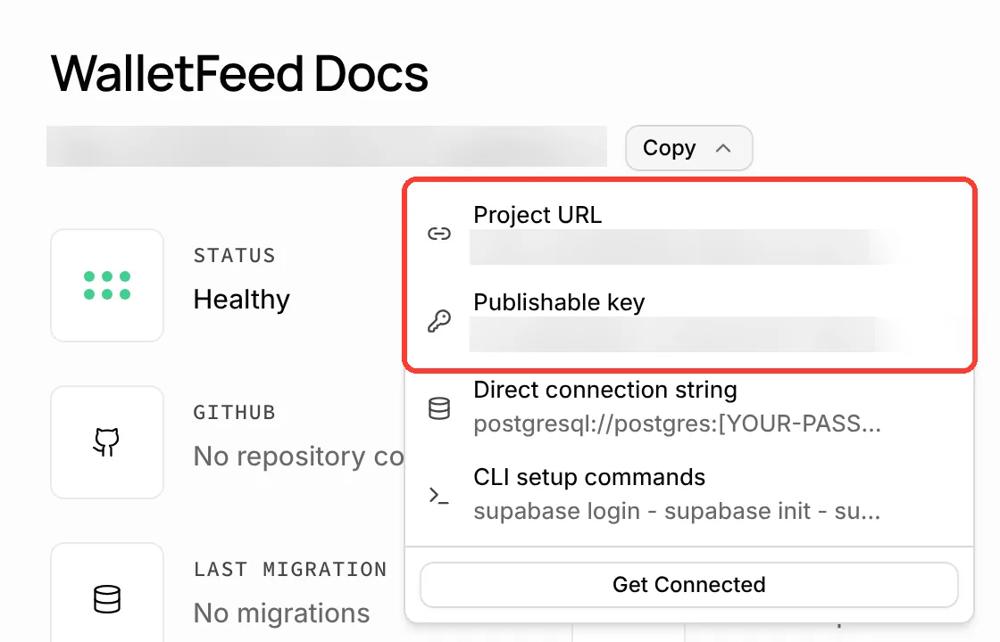
-
On your iPhone, touch and hold Publishable Key in the Supabase form.
-
Tap Paste.
-
On your Mac, click Copy again.
-
Click Project URL.
-
On your iPhone, touch and hold the field that shows
https://abcd.supabase.co. -
Tap Paste.
Step 4: Make the table in Supabase
The SQL from WalletFeed makes the walletfeed_transactions table in your project. On the API Keys page, Supabase shows "Publishable keys can be safely shared publicly". Thus, the SQL also adds a policy to the table. The policy lets WalletFeed read and change the table only with the token of this destination. A person with only the project URL and the publishable key cannot read your transactions.
-
On your iPhone, in the Supabase form, tap Share SQL.
Result: iOS opens a menu with Copy.
-
Send the SQL to your computer, for example with AirDrop.
If your computer is a Mac with Universal Clipboard, you can tap Copy.
-
On your computer, open your project in the Supabase dashboard.
-
In the bar on the left, click the SQL Editor icon.
The icons in this bar have no names on the page. When you put the pointer on an icon, Supabase shows its name.
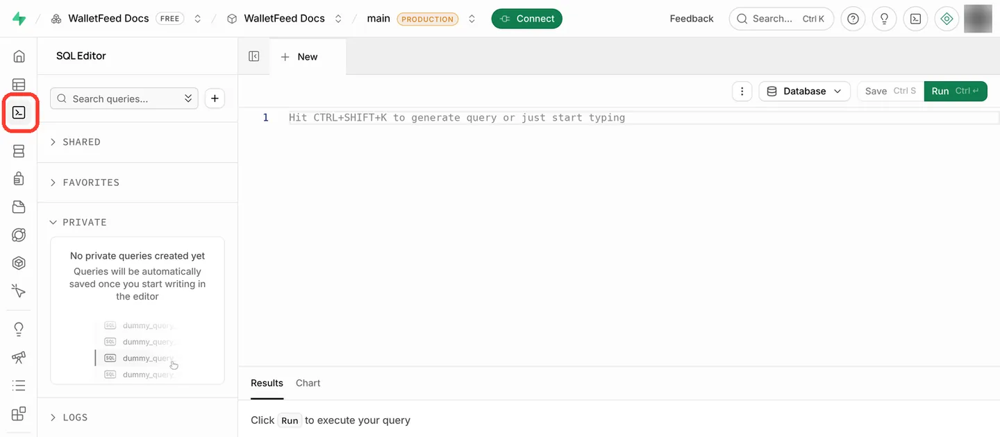
-
If Supabase shows "Snippets no longer save automatically", click Understood.
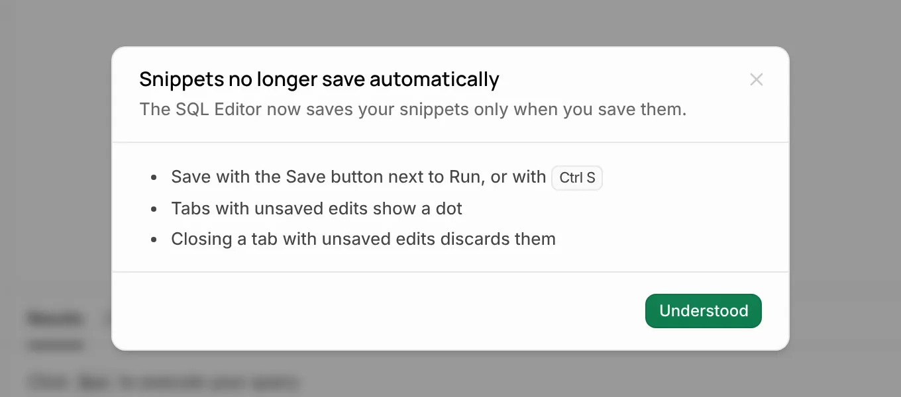
-
Paste the SQL in the editor.
The editor shows 28 lines of SQL. Do not change the SQL.
-
Click Run.
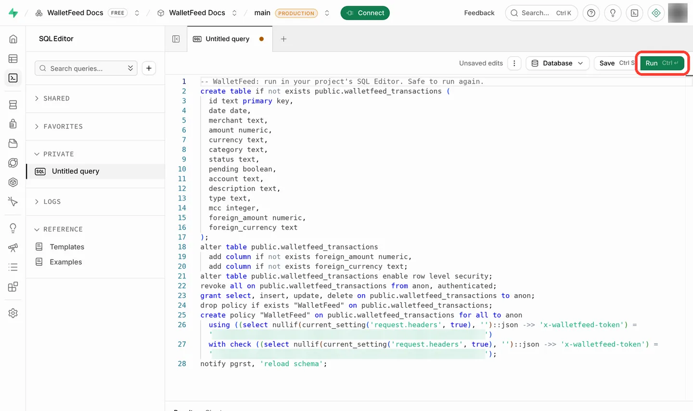
Result: Supabase shows "Potential issue detected". Supabase shows this message because the SQL removes all access to the table first. Then the SQL gives access only to this destination. The SQL does not delete the table or its rows.
-
Click Run query.
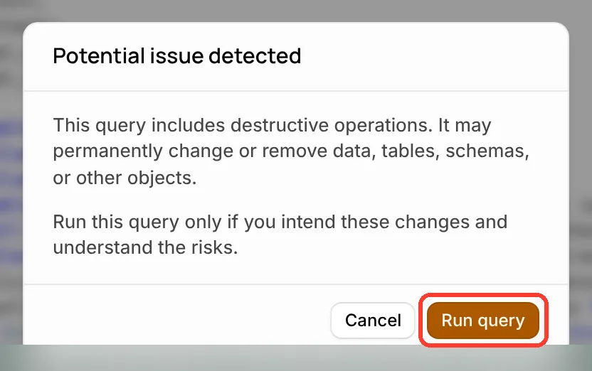
-
Make sure that the result is "Success. No rows returned".
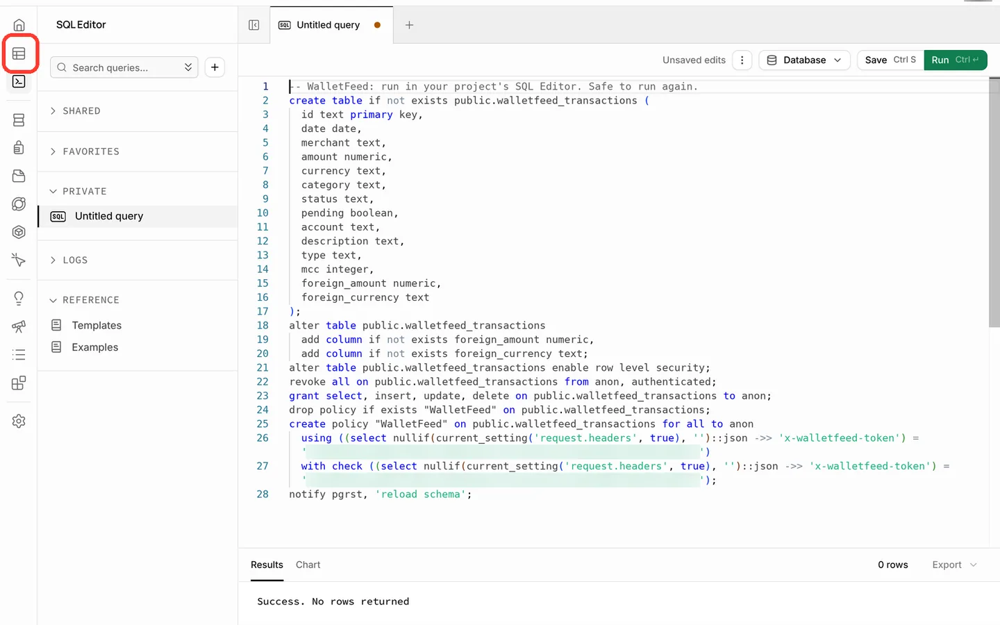
Step 5: Add the destination in WalletFeed
-
On your iPhone, open WalletFeed again.
-
In the Supabase form, tap Add.
Result: WalletFeed tries to read the table with the project URL and the publishable key.
-
If WalletFeed shows a message in red below Share SQL, refer to If there is a problem.
-
In Send Transactions to Supabase?, tap Send.
The message tells you the data that Supabase receives and the Wallet accounts. If Initial History is not All, the message also gives the start date. If you tap Cancel, WalletFeed does not add the destination. The Supabase form stays open.
Result: WalletFeed starts to send your transactions to Supabase. In Destinations, the name of the new destination has two parts, for example "Supabase · abcd". The second part is from the project URL.
Step 6: Find the transactions in Supabase
-
On your computer, open your project in the Supabase dashboard.
-
In the bar on the left, click the Table Editor icon.
-
Click
walletfeed_transactions.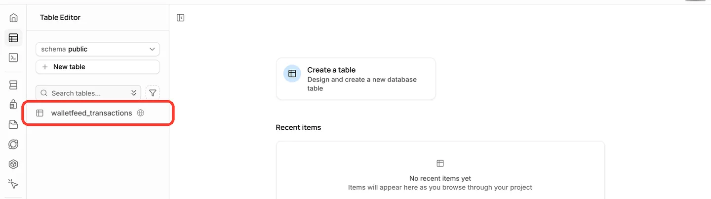
Result: The Table Editor shows one row for each transaction. For the columns, refer to Columns in the Supabase table.
Columns in the Supabase table
Each transaction is one row in the public.walletfeed_transactions table.
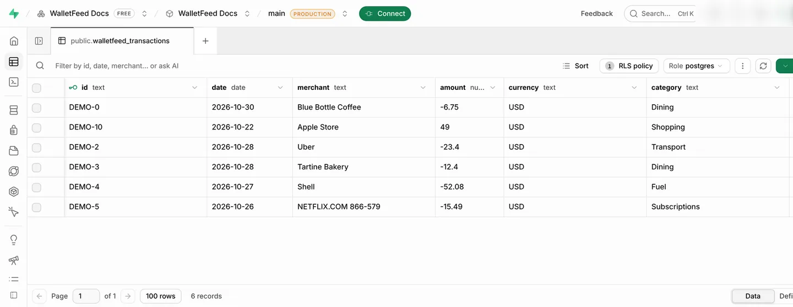
WalletFeed puts these values in the columns:
| Column | Postgres type | Value |
|---|---|---|
id |
text |
The WalletFeed ID of the transaction. This column is the primary key. |
date |
date |
The day of the transaction, in the time zone of your iPhone. |
merchant |
text |
The merchant name, or the description if Wallet has no merchant name. |
amount |
numeric |
The amount of the transaction. A purchase or a fee is less than 0. A payment or a refund is more than 0. |
currency |
text |
The currency code, for example USD. |
category |
text |
The WalletFeed category, for example Groceries or Travel. |
status |
text |
The status in Wallet, for example pending, authorized or booked. |
pending |
boolean |
true when the status is pending or authorized, and false for a different status. |
account |
text |
The name of the Wallet account, for example Apple Card. |
description |
text |
The description of the transaction in Wallet. |
type |
text |
The transaction type in Wallet, for example pointOfSale or refund. |
mcc |
integer |
The merchant category code. |
foreign_amount |
numeric |
For a purchase in a different currency, the amount in that currency, with the same sign as amount. |
foreign_currency |
text |
The code of that different currency. |
For a purchase in US dollars, foreign_amount and foreign_currency have no value (null). When a transaction changes, WalletFeed updates the row that has the same id. If you change a value in a WalletFeed column, WalletFeed replaces your change when the transaction changes again.
Your transactions go from your iPhone directly to your Supabase project. WalletFeed has no account and no WalletFeed servers. After Supabase receives your transactions, the terms of Supabase are applicable to them.
New and changed transactions
While WalletFeed is open, Supabase receives changes in seconds. When WalletFeed is not open, iOS starts WalletFeed approximately 1 hour or less after a change in Wallet. If Background Sync is on in Settings › Sync, WalletFeed then sends the change. Background Sync is on until you set it to off.
A pending charge has the value true in pending. When its status changes to booked, WalletFeed updates the same row. WalletFeed deletes the row of a declined or expired charge. WalletFeed also deletes the row of a transaction that Wallet removes.
A refund is a new row. Its amount is more than 0.
Send previous transactions
A new destination also receives previous transactions from the start date in Settings › Sync › Initial History. Initial History is All until you change it.
To send previous transactions after you add Supabase, do these steps:
- In Destinations, tap the Supabase destination.
- Tap Send History.
- Tap 30 Days, 90 Days, 1 Year or All.
- To stop WalletFeed before it sends all of the transactions, tap Send History › Stop Sending.
Send History does not make copies of rows. WalletFeed updates the row that has the same id. If you deleted a row in Supabase, Send History adds the row again.
For more information, refer to Send previous transactions.
Change or remove the destination
You change the Supabase destination on its screen in Destinations.
-
In WalletFeed, tap Destinations.
-
Tap the Supabase destination.

The screen of a Supabase destination has the same items. In place of Replace Token, it has Project, Share SQL and Replace Key.
Send only some transactions
- In Destinations, tap the Supabase destination.
- Set Filter to on.
- Change Include, Minimum, Include Pending, Accounts, Categories or Exclude.
For more information, refer to Filter the transactions for a destination.
Stop the destination for a time
-
In Destinations, tap the Supabase destination.
-
Set Enabled to off.
Until you set Enabled to on again, WalletFeed does not send transactions to Supabase.
Replace the key
If you deleted the publishable key in Supabase, or if Supabase does not accept the key, do these steps:
-
If the project has no publishable key, make a key (refer to If the project has no publishable key).
-
On your iPhone, open the Supabase dashboard.
-
Copy the publishable key with steps 2 thru 7 of Step 3.
-
Open WalletFeed again.
-
In Destinations, tap the Supabase destination.
-
Tap Replace Key.
-
Touch and hold Publishable Key.
-
Tap Paste.
-
Tap Replace.
Result: Before WalletFeed puts the new key in the Keychain, WalletFeed reads the table with the key. Then Replace Key shows a green checkmark.
Use the SQL of the destination again
In the destination, Share SQL gives the SQL with the token of this destination. This SQL keeps the rows in the table. If the table does not have the foreign_amount and foreign_currency columns, the SQL adds them.
- In Destinations, tap the Supabase destination.
- Tap Share SQL.
- Send the SQL to your computer, for example with AirDrop.
- On your computer, open the SQL Editor of your project.
- Paste the SQL in the editor.
- Click Run.
- Click Run query.
- In WalletFeed, tap Send Test.
Remove Supabase from WalletFeed
-
In Destinations, tap the Supabase destination.
-
Tap Delete.
-
Tap Delete again.
Result: WalletFeed removes the destination and deletes the key from your iPhone. The rows that WalletFeed sent stay in your Supabase table. You can delete these rows or the table in Supabase.
Delete the key in Supabase
After you delete the key, Supabase does not accept the key from WalletFeed. Supabase also does not accept the key from a different app that uses it.
-
On your computer, open your project in the Supabase dashboard.
-
In the bar on the left, click the Project Settings icon.
-
Click API Keys.
-
In the row of the publishable key, click ⋮.
-
Click Delete API key.
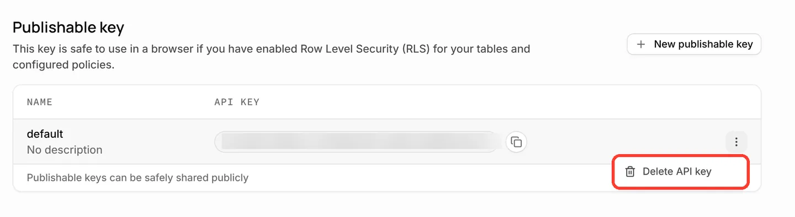
-
In the dialog, type the name of the key, for example
default. -
Click Yes, irreversibly delete this API key.
Result: Supabase shows "Successfully deleted publishable key". The WalletFeed destination then shows "Authentication failed".
If there is a problem
To make sure that WalletFeed can send transactions to Supabase, do these steps:
-
In Destinations, tap the Supabase destination.
-
Tap Send Test.
Result: If Supabase receives the test row, WalletFeed shows a green checkmark.
If you cannot tap Add
WalletFeed lets you tap Add only when the form has a key and a project URL. If the key is a secret key, you cannot tap Add, and WalletFeed shows "Use the publishable key. Secret keys skip the table's policy."
- Copy the publishable key again (refer to Step 3). The key starts with
sb_publishable_. - In WalletFeed, clear the Publishable Key field.
- Paste the key in the Publishable Key field.
- Make sure that the field below the key contains the project URL.
If WalletFeed shows "Key rejected. Copy the publishable key again."
Supabase did not accept the key. For example, you copied only a part of the key, or a person deleted the key in Supabase.
- Copy the publishable key again (refer to Step 3).
- In WalletFeed, clear the Publishable Key field.
- Paste the key in the Publishable Key field.
- Tap Add.
If the project has no publishable key, refer to If the project has no publishable key.
If WalletFeed shows "Table not found. Run the SQL, then try again."
The project has no walletfeed_transactions table. For example, you did not click Run query, or you pasted the SQL in a different project.
- On your computer, open the project that has the URL from Step 3.
- Open the SQL Editor.
- In WalletFeed, tap Share SQL.
- Send the SQL to your computer, for example with AirDrop.
- On your computer, paste the SQL in the SQL Editor.
- Click Run.
- Click Run query.
- In WalletFeed, tap Add.
If WalletFeed shows "Couldn't connect"
WalletFeed cannot connect to the project URL in the form.
- Make sure that your iPhone has an internet connection.
- Copy the project URL again (refer to Step 3).
- In WalletFeed, clear the field below the key.
- Paste the URL in this field.
- Tap Add.
If the project has no publishable key
A new project has a publishable key with the name default. If a person deleted this key, Supabase shows "No publishable keys created yet" on the API Keys page.
-
On your computer, open your project in the Supabase dashboard.
-
In the bar on the left, click the Project Settings icon.
-
Click API Keys.
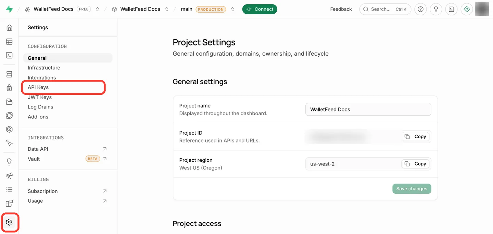
-
Click New publishable key.
-
Obey the instructions in Supabase.
-
Copy the new key, as in Step 3.
On a Mac, you can also click the copy button in the row of the key. The API Keys page does not show the project URL.
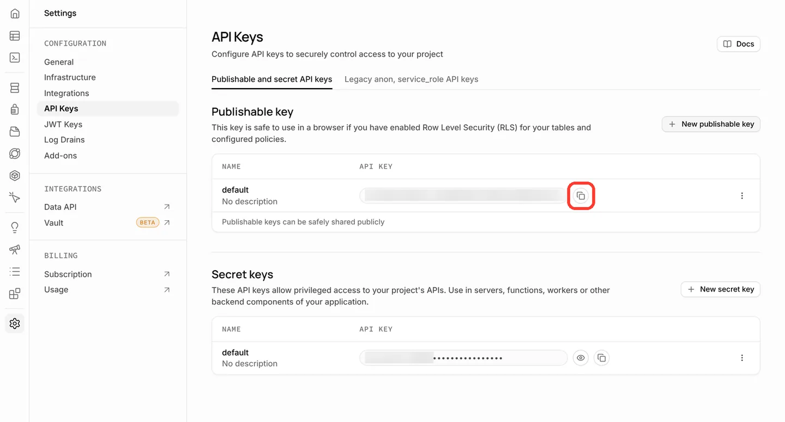
If the destination shows "Authentication failed"
Supabase did not accept the key or the token of the destination. For example, a person deleted the key in Supabase, or SQL from a different Supabase form or destination replaced the token in the policy.
-
In WalletFeed, tap Destinations.

-
Use the SQL of the Supabase destination again (refer to Use the SQL of the destination again).
-
If Send Test shows an error, replace the key (refer to Replace the key).
If the destination shows "Rejected (HTTP 404)"
The project has no walletfeed_transactions table. For example, a person deleted the table in Supabase.
- Use the SQL of the Supabase destination again (refer to Use the SQL of the destination again).
If Supabase stopped your project
The Supabase pricing page tells you that Free plan projects "are paused after 1 week of inactivity".
- On your computer, open your project in the Supabase dashboard.
- If Supabase stopped the project, obey the instructions on the project page to start the project again.
- On your iPhone, tap the Supabase destination in Destinations.
- Tap Send Test.
If no new rows show in the table
WalletFeed sends changes when it is open, or when iOS starts it in the background.
- On your iPhone, open WalletFeed.
- Tap the gear icon at the top of Destinations.
- In Settings › Sync, make sure that Background Sync is on.
- In Destinations, tap the Supabase destination.
- Make sure that the destination shows no error below Last Sync.
- Make sure that Filter is off, or that the filter includes the transactions.
- Tap Send Test.
Related
Updated October 30, 2026